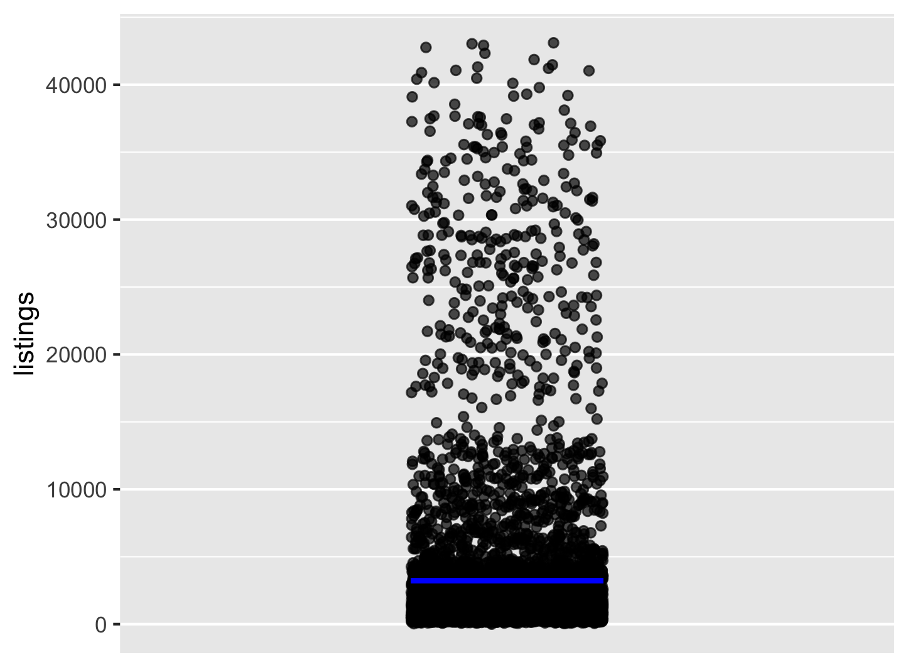
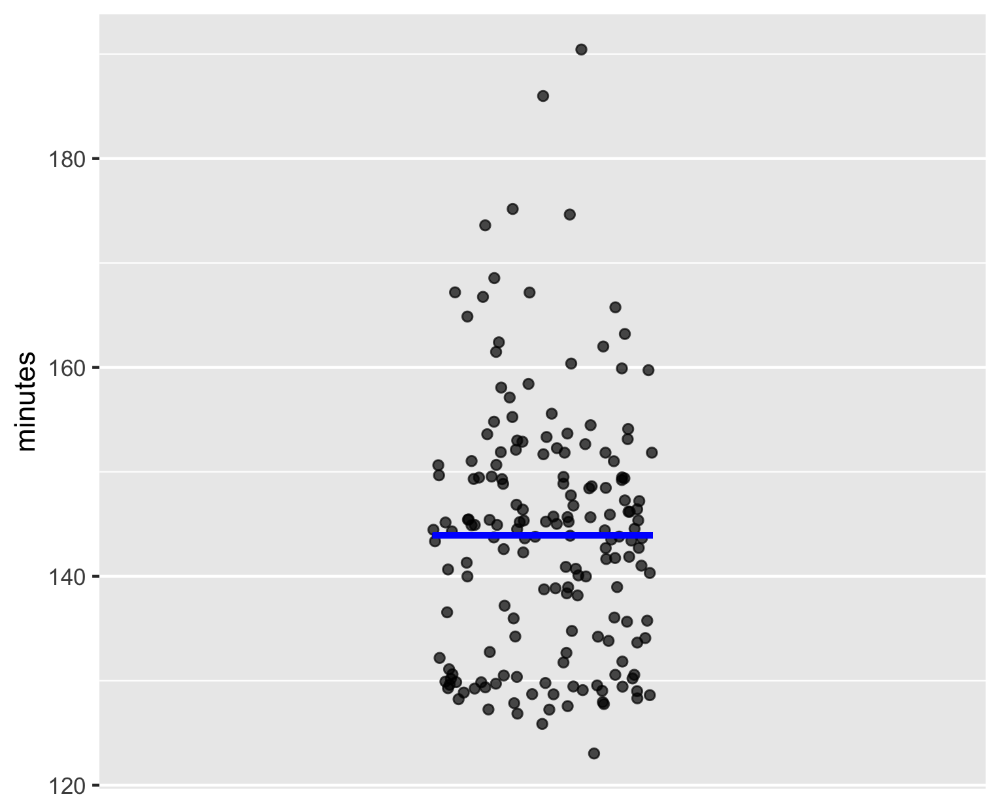
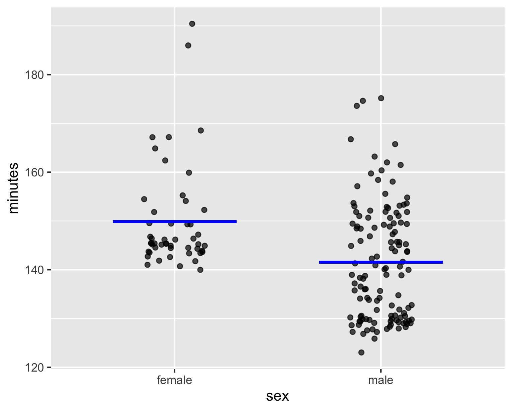
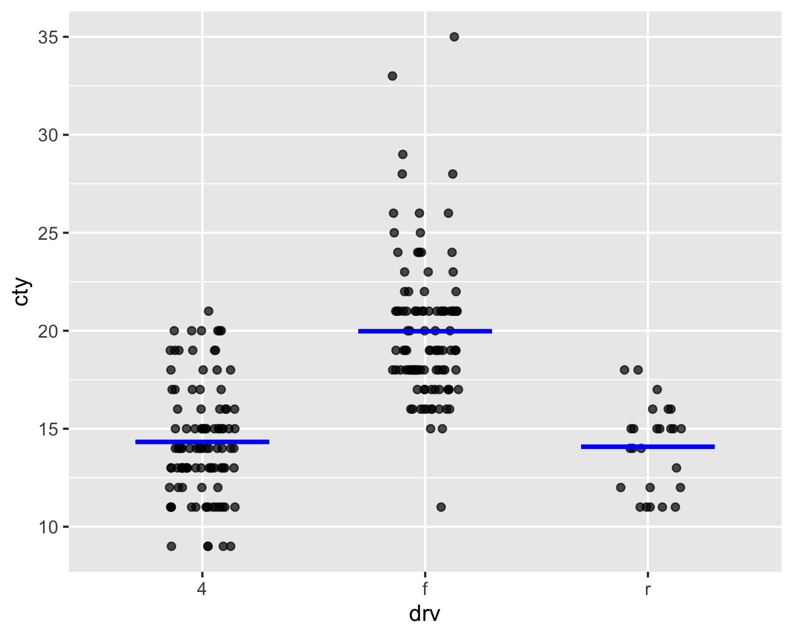
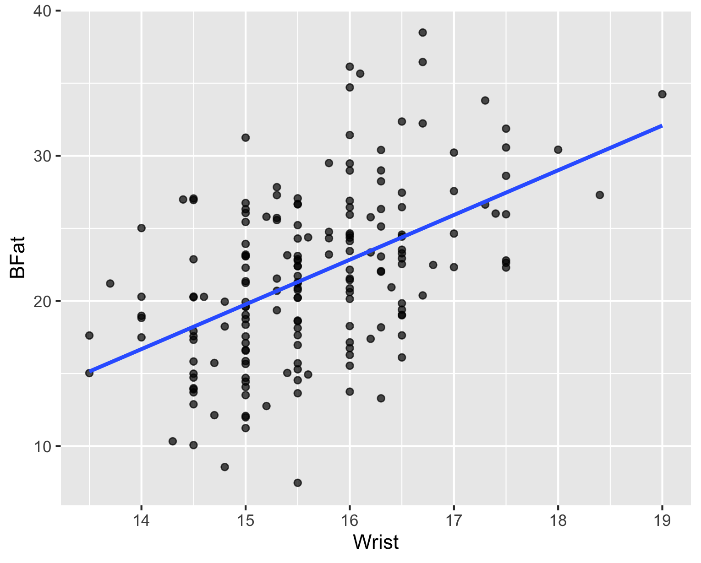

txhousing |>
head(10) 10 Visualizing Models
In this chapter, we will first revisit how to build visualize the two mean models we saw earlier in Chapter 5 and Chapter 6. To be sure, we already covered these in Chapter 8, but repeat it with different examples to provide reinforcement.
We will then learn how to visualize line models that we learned about in Chapter 9. This will set the stage for us to learn how to build these models and construct the models as equations.
10.1 Recap of models
From prior chapters, we have learned that a model takes as input the values of the explanatory variable(s) (if any) and outputs an estimated value of the outcome variable.
We started off in Chapter 5 by showing that, in the absence of an explanatory variable, the mean is the best model. For example, our mpg data frame contains data about several cars. Let us suppose that our outcome variable is hwy, the highway mileage of a car.
If we are given only the data from that single column hwy, and nothing else, the best model we can come up with for estimating the highway mileage of a car is to always provide the average highway mileage from the data set.
We then considered, in Chapter 6, the case where we had a single explanatory variable, a categorical one and saw that here too the same idea applies, except that the best model for a category is the average for that category.
We then studied, in Chapter 9 the case of a single explanatory variable again, but this time the explanatory variable was numerical. We learned there about the least squares criterion to find the best model.
Chapter 8 showed us how to visualize the models we built around the idea of the mean as a model in Chapter 5 and @#sec-category-means. In this chapter, we use new examples to briefly review how to visualize those models and also compute and write out the model functions. We then move on to visualizing our line models from Chapter 9 and how to build and reconstruct the model function as an equation.
We will first learn how to visualize the models. We then look at how to generate the model function in equation form.
10.2 Visualizing simple mean models (no explanatory variable)
We take a different dataset this time. The data frame txhousing contains real estate data for the state of Texas for several years. We first follow the good practice of understanding the dataset before jumping in and building models. Table 10.1 shows the first 10 rows .
| city | year | month | sales | volume | median | listings | inventory | date |
|---|---|---|---|---|---|---|---|---|
| Abilene | 2000 | 1 | 72 | 5380000 | 71400 | 701 | 6.3 | 2000 |
| Abilene | 2000 | 2 | 98 | 6505000 | 58700 | 746 | 6.6 | 2000 |
| Abilene | 2000 | 3 | 130 | 9285000 | 58100 | 784 | 6.8 | 2000 |
| Abilene | 2000 | 4 | 98 | 9730000 | 68600 | 785 | 6.9 | 2000 |
| Abilene | 2000 | 5 | 141 | 10590000 | 67300 | 794 | 6.8 | 2000 |
| Abilene | 2000 | 6 | 156 | 13910000 | 66900 | 780 | 6.6 | 2000 |
| Abilene | 2000 | 7 | 152 | 12635000 | 73500 | 742 | 6.2 | 2000 |
| Abilene | 2000 | 8 | 131 | 10710000 | 75000 | 765 | 6.4 | 2001 |
| Abilene | 2000 | 9 | 104 | 7615000 | 64500 | 771 | 6.5 | 2001 |
| Abilene | 2000 | 10 | 101 | 7040000 | 59300 | 764 | 6.6 | 2001 |
We see that for the first 10 rows, city and year are the same, but there is variation in the other variables. The dataset has 8602 observations or rows. Use the command ?txhousing in RStudio to answer the following questions.
If you had access to only the column listings and we had to build a model to predict listings based on no other information, what would you predict?
txhousing|>
point_plot(listings ~ 1, annot = "model", interval = "none")In this example, our outcome variable is listings and we have no explanatory variable. Therefore we use “1” on the RHS of the tilde expression.
This code shows you how to add a model as an annotation. We had used “annot=” earlier for generating violin plots. Here we use:
annot = “model”, interval = “none”
The first part asks the function to annotate the scatterplot with a model. For now, we will just use the second part “interval = …” without explanation. Later in the course, you will see why we use this.

Let us see one more example of visualizing a simple mean model.
The data frame Boston_marathon contains data about the results of the Boston Marathon over the years.
Like we did with the txhousing data frame, we should first understand the data frame before processing it. Take a look at the codebook for the Boston_marathon data frame and answer the following questions. Try to recall how we got the codebook for txhousing and use the same approach here. The codebook is not too informative, but just viewing it using View(Boston_marathon) might tell you what you need to know.
Let us visualize a model for the variable minutes. As before, we generate the scatterplot and then annotate with a model. We changed the data frame and the tilde expression. Figure 10.2 shows the plot. The model line is at minutes = 144.
Boston_marathon |>
point_plot(minutes ~ 1, annot = "model",
interval = "none")

10.3 Visualizing category mean models (single explanatory variable that is categorical)
We built a model for minutes from the Boston_marathon data frame assuming no explanatory variable. What if we used sex as the explanatory variable? Figure 10.3 shows the model. This time we have a separate mean model for each sex.
Boston_marathon |>
point_plot(minutes ~ sex, annot = "model",
interval = "none")

For another example, we now use the mpg data frame and plot a model for the city. mileage (variable cty) with the kind of drive (variable drv) as the explanatory variable. Figure 10.4 shows the plot. This time we see that the model is the mean for each kind of drive.
mpg |>
point_plot(cty ~ drv, annot = "model",
interval = "none")

10.4 Visualizing least-squares line models (single explanatory variable that is numeric)
We use the Anthro_F data frame. Take a look at its codebook and answer the following question.
We would like to visualize a model that predicts the body fat (variable BFat) with Wrist as the explanatory variable. Figure 10.5 shows the scatterplot and the least squares line.
Anthro_F |>
point_plot(BFat ~ Wrist, annot = "model",
interval = "none")
